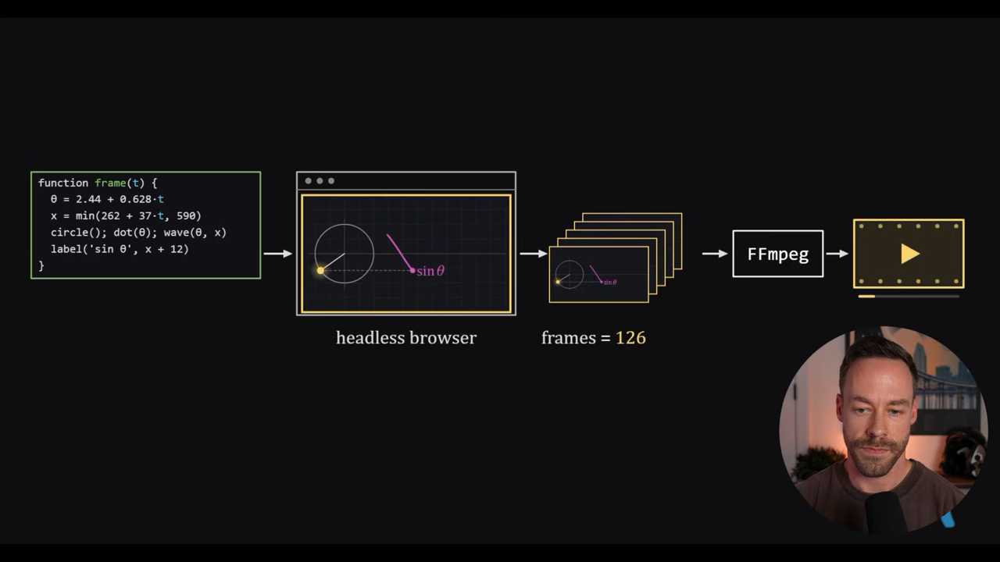
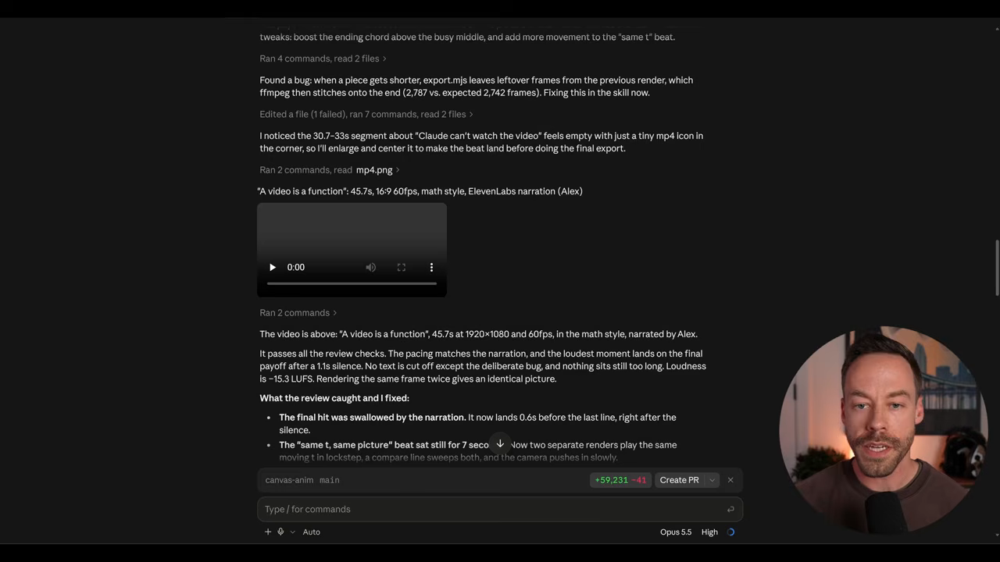
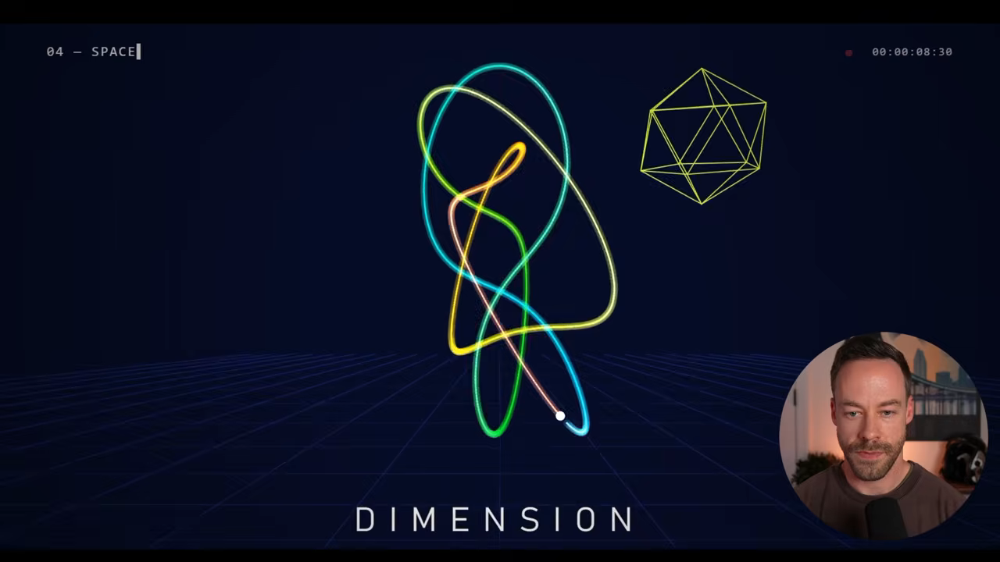
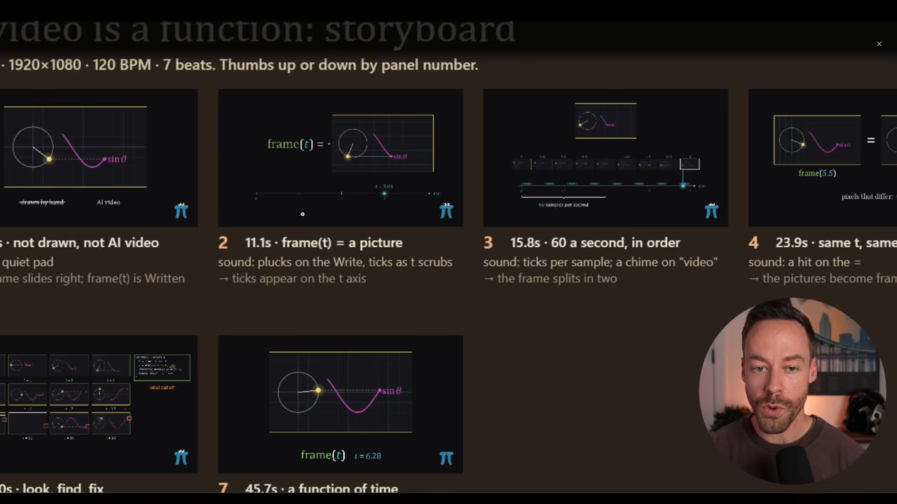
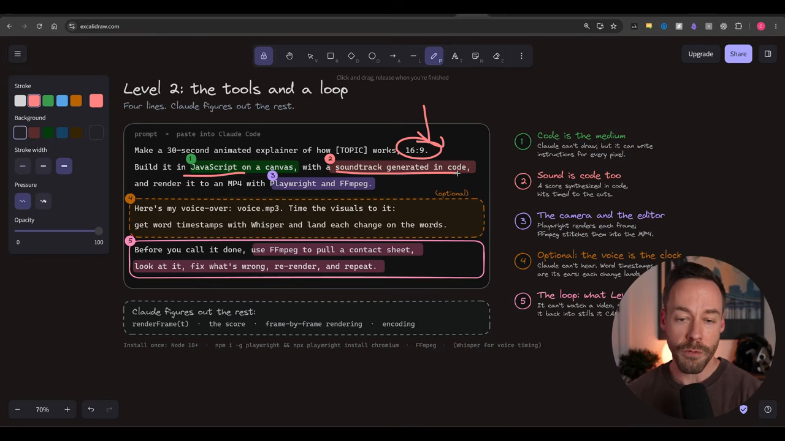
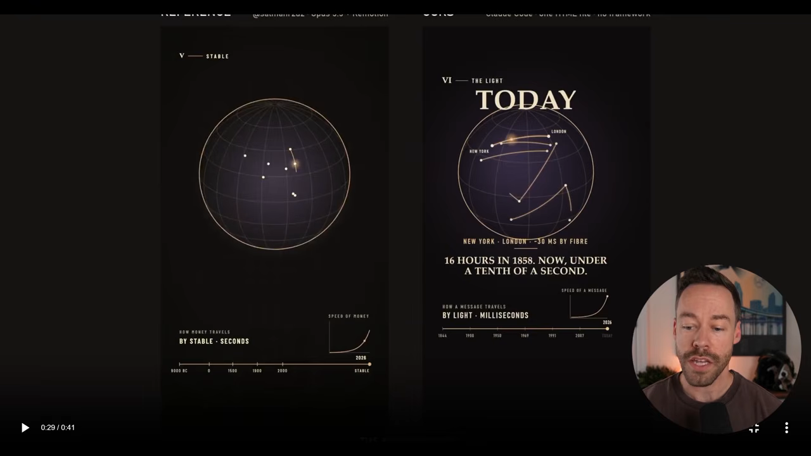
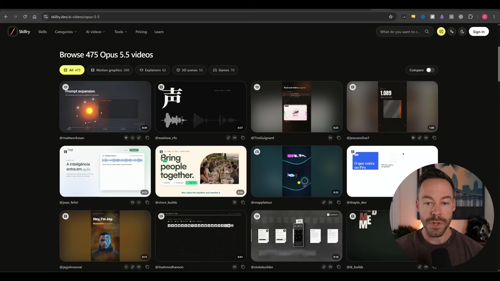
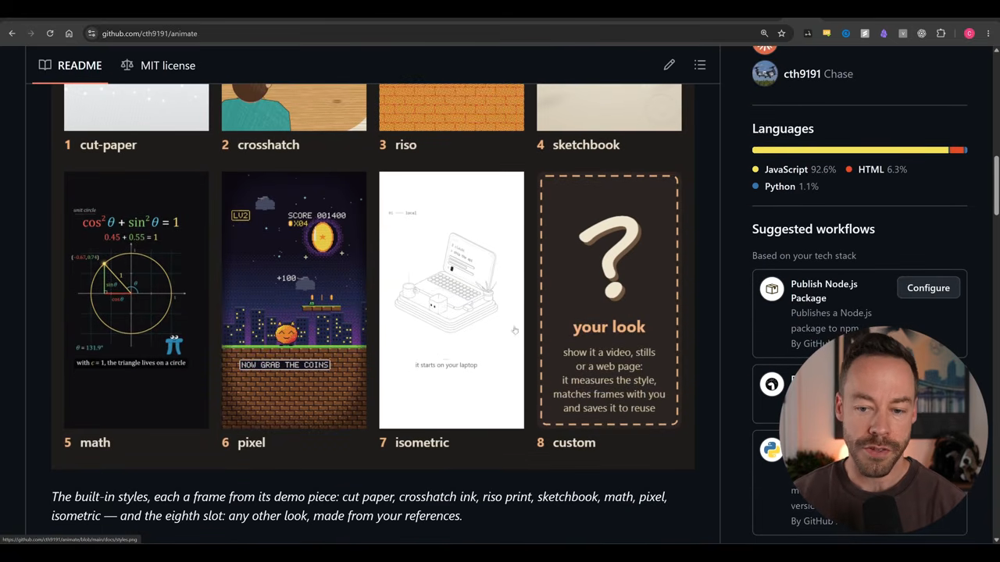
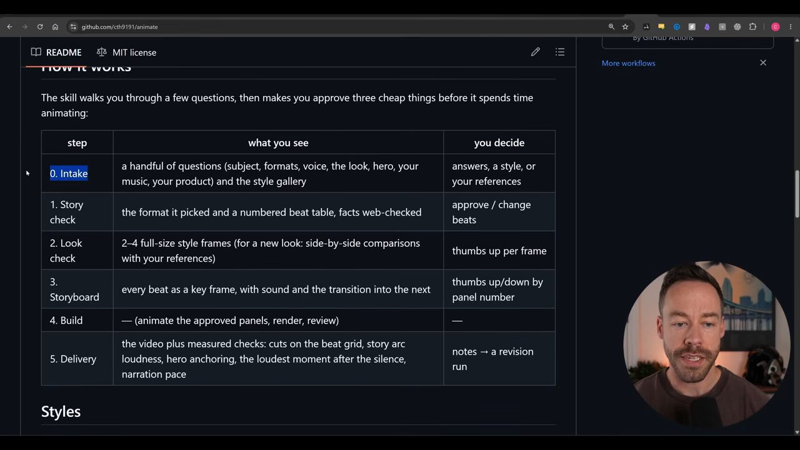

Claude가 영상을 만드는 원리
Claude Code는 영상 생성 AI가 아니에요. 그런데도 설명 영상이나 모션 그래픽을 만들 수 있는 건, 영상을 '찍는' 대신 영상이 무엇인지를 코드로 적기 때문이에요.
핵심은 JavaScript 함수 하나예요. 시간 t를 넣으면 그 순간의 그림 한 장을 돌려줘요. 이걸 1초에 60번 부르면 60장의 정지 이미지가 생기고, 차례로 재생하면 1초짜리 영상이 돼요. 같은 t를 넣으면 늘 같은 그림이 나오니까, 프레임 하나만 다시 그리거나 따로 검사할 수도 있어요.

그리는 건 브라우저, 꿰매는 건 FFmpeg
그림을 실제로 그리는 건 헤드리스 브라우저예요. Playwright로 화면 없는 Chrome을 띄워 프레임을 하나씩 렌더링해요. 그다음 오픈소스 도구 FFmpeg가 프레임들을 이어 붙여 MP4로 만들어요. 소리도 시간의 함수로 코드에서 만들 수 있어요.
Claude can't watch the video, but it can look at the frames, spot what's wrong, and fix the function.
Claude는 영상을 볼 수 없지만, 프레임을 보고 틀린 곳을 찾아 함수를 고칠 수 있어요.
— 영상 01:09
이게 이 방식의 가장 큰 장점이에요. Claude가 자기 작업을 직접 검사하고 고칠 수 있거든요. 발표자는 이 원리를 설명하는 영상도 3Blue1Brown 스타일로 한 번에 만들게 했어요. 내레이션은 ElevenLabs로 만들었고, 대본을 먼저 쓴 뒤 그래픽을 거기에 맞췄어요.

외부 유료 도구 없이 코드만으로 만들기 때문에 사실상 공짜예요. Claude 사용량만 들어요. 발표자는 이 과정을 네 단계로 나눠 설명해요. 프롬프트, 확인 루프, 레퍼런스, 그리고 스킬로 묶기예요.
레벨 1 — 노력보다 프롬프트, 그리고 스토리보드
발표자는 Opus 5.5에 짧은 프롬프트 하나를 줬어요. '모션 디자이너로서의 실력을 보여 주는 15초짜리 모션 그래픽을 이력서용 쇼릴처럼 만들어 달라, 스킬은 쓰지 말라'는 내용이에요. 그리고 에포트 레벨만 바꿔 세 번 돌렸어요.
| 에포트 레벨 | 걸린 시간 | 결과 |
|---|---|---|
| low | 약 20분 | 충분히 쓸 만해요 |
| high | 약 30분 | 충분히 쓸 만해요 |
| ultracode | 8시간 | 가장 좋아요 |

발표자의 결론은 이래요. 결과물이 아쉽다면 에포트 문제가 아니라 프롬프트 문제일 가능성이 커요. JavaScript를 쓰는 Claude의 기본 실력이 이미 꽤 높아서, 프롬프트를 거창하게 쓰지 않아도 괜찮은 결과가 나와요.
코딩 전에 스토리보드부터
결과를 가장 크게 바꾸는 한 가지는 스토리보드를 먼저 요청하는 거예요. 영상 전체를 바로 코딩하게 하지 말고, 장면(beat)마다 대표 프레임을 먼저 그려 달라고 해요. 그러면 코드가 한 줄도 나오기 전에 방향을 고칠 수 있어요.

JavaScript 영상은 만드는 데 시간이 오래 걸려요. 20분 걸려 받은 영상이 마음에 안 들어 다시 돌리고, 또 다시 돌리다 보면 몇 시간이 사라져요. 스토리보드 한 번이 그 시간을 아껴 줘요.
레벨 2 — 프롬프트에 넣을 것과 확인 루프
레벨 2는 프롬프트에 무엇을 넣을지, 그리고 어떤 도구가 필요한지를 다뤄요. 발표자는 화면에 프롬프트 예시를 띄우고 다섯 군데에 번호를 붙여 설명했어요.

| 번호 | 프롬프트에 넣을 것 | 왜 넣나요 |
|---|---|---|
| — | 길이·형식·화면비 (예: 30초 설명 영상, 16:9) | 가로 전체 화면인지, 세로형 숏폼인지 정해요 |
| 1 | JavaScript로, canvas에 그릴 것 | Claude는 그림을 못 그려도 모든 픽셀의 지시문은 쓸 수 있어요 |
| 2 | 코드로 만든 사운드트랙 | 소리도 코드예요. 직접 만든 음악을 줄 수도 있어요 |
| 3 | Playwright와 FFmpeg로 MP4 렌더링 | Playwright가 프레임을 그리고, FFmpeg가 꿰매요 |
| 4 (선택) | 내레이션 voice.mp3를 주고 Whisper로 단어별 시각을 뽑아 화면 전환을 맞출 것 | Claude는 들을 수 없어서, 단어 시각이 귀 역할을 해요 |
| 5 | 끝내기 전에 FFmpeg로 콘택트 시트를 뽑아 보고, 고치고, 다시 렌더링하기를 반복할 것 | 영상을 볼 수 없으니 정지 화면으로 바꿔 확인해요 |
문구를 똑같이 쓸 필요는 없어요. 다만 '끝내기 전에 Playwright와 FFmpeg로 결과를 확인하고 맞춰라'는 뜻은 꼭 들어가야 해요. 발표자는 Opus 5.5나 Fable 5.1은 이걸 말하지 않아도 대개 알아서 한다고 해요. 그래도 원리를 알아야 결과가 어긋났을 때 무엇을 요구할지 정확히 말할 수 있어요.
그림이 먼저일까, 소리가 먼저일까
만드는 순서도 정해야 해요. 그림을 먼저 만들고 소리를 나중에 입힐 수도 있고, 거꾸로 할 수도 있어요. 1단계에서 본 설명 영상은 내레이션 음성을 먼저 주고, Claude가 거기에 그래픽을 맞추게 했어요. 내레이션은 ElevenLabs로 만들었는데, 오픈소스 음성 합성 도구도 많다고 덧붙였어요.
레벨 3 — 레퍼런스로 구도 빌려 오기
레벨 3부터는 프롬프트만으로 끝내지 않고 레퍼런스를 함께 줘요. 방법은 두 가지예요.
- 이미지: 그 이미지를 영상에 그대로 넣게 하거나, 미감만 따라 하게 해요.
- 영상: '이 영상의 구도를 영감 삼아, 내용은 우리 것으로 채워 달라'고 해요.
발표자는 Opus 5.5와 Remotion으로 만든 '화폐의 역사' 영상을 레퍼런스로 줬어요. 그리고 같은 구도로 '전기의 역사'를 설명하는 JavaScript 영상을 만들게 했어요.

내용은 완전히 다른데 같은 디자인 계열로 보일 만큼 비슷해요. Claude가 레퍼런스의 구도를 꽤 잘 옮긴다는 걸 보여 줘요.
영감은 어디서 찾나요
발표자는 두 곳을 꼽았어요. 하나는 Skillry(skillry.dev)예요. AI 영상 카테고리에서 Opus 5.5로 만든 영상들을 둘러볼 수 있어요. 유료 사이트지만 무료로도 꽤 많이 볼 수 있어요. 다른 하나는 X(트위터)예요. 특히 Kevin Ngo의 계정을 이런 영상의 최고 수준을 보여 주는 곳으로 추천했어요.

레벨 4 — 전 과정을 스킬로 묶기
마지막 단계는 지금까지의 과정을 Claude가 매번 똑같이 되풀이할 수 있는 절차로 굳히는 거예요. 가장 좋은 방법은 스킬로 만드는 거예요. 발표자는 직접 만든 Claude Code 스킬 'Animate'를 공개했어요.

기본 스타일이 일곱 개 들어 있어요. 영상에서는 컷 페이퍼, 크로스해치, 리소, 스케치북, 아이소메트릭을 예로 들었어요. 레벨 3처럼 레퍼런스 이미지나 영상을 주면 나만의 스타일도 만들 수 있어요.
스킬이 안내하는 단계
이 스킬의 좋은 점은 사용자를 단계마다 이끌어 준다는 거예요. 비싼 애니메이션 작업에 들어가기 전에, 싸게 확인할 수 있는 것 세 가지를 먼저 승인받아요.

| 단계 | 하는 일 | 내가 정할 것 |
|---|---|---|
| 0. 인테이크 | 주제, 형식, 목소리, 룩, 주인공 캐릭터, 음악 등을 묻고 스타일 갤러리를 보여 줘요 | 답변, 스타일, 레퍼런스 |
| 1. 스토리 확인 | 고른 형식과 번호 붙은 장면표를 보여 줘요. 사실관계는 웹에서 확인해요 | 장면 승인·수정 |
| 2. 룩 확인 | 스타일 프레임 2~4장을 보여 줘요 | 프레임마다 좋다·싫다 |
| 3. 스토리보드 | 장면마다 키 프레임과 소리, 전환을 보여 줘요 | 패널 번호로 좋다·싫다 |
| 4. 빌드 | 승인된 패널을 애니메이션으로 만들고, 렌더링하고, 검토해요 | — |
| 5. 전달 | 영상과 함께 측정한 검사 결과를 줘요 | 메모를 주면 수정 작업을 돌려요 |
앞에서 말한 Playwright·FFmpeg 확인 루프는 이 과정 내내 자동으로 돌아요. 사용자는 질문에 답하고 레퍼런스만 주면 돼요.
설치
플러그인으로 설치하거나, 저장소 URL을 Claude Code에 주면 알아서 설치해요. 이때 Playwright, FFmpeg, faster-whisper 같은 준비물도 챙기고, ElevenLabs 커넥터를 쓸지도 물어봐요. 발표자는 아직 계속 다듬는 중이라며, 개선한 점이 있으면 PR을 보내 달라고 했어요.
/animate 사용 예시예요. 영상 13:13에서 보기/plugin marketplace add cth9191/animate
/plugin install animate@animate